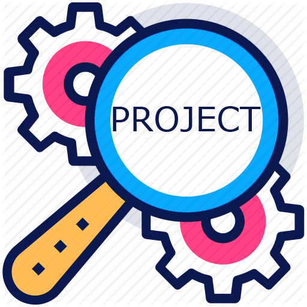
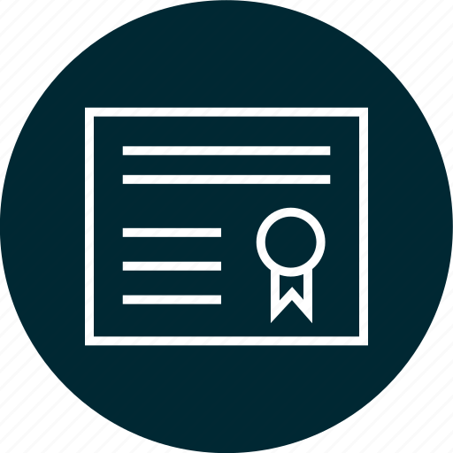

I'm Amar Singh, an enthusiastic undergraduate pursuing B.Tech in Data Science (Hons) with a minor in Finance. Passionate about the fusion of data science and finance, I aim to revolutionize decision-making. Skilled in data analysis, statistical modeling, and programming, I bring a strong academic foundation to drive impactful change in optimizing financial strategies and risk management. Let's connect to explore how I can contribute to your organization's success.
Built knowledge about people's preferences and mindset.
got the chance to work with differebt people having different points of view.
Used the knowledge of data Science in analysis of number of house who give seperate waste who does not.
Marketing and sales Intern INFORTIS WORLDWIDE
23 June,2023(31stjuly),2023
Digital marketing skills
Time management and organization
Teamwork and Business acumen
POSITION OF RESPONSIBILITY
Survey on Tuberculosis Prevalence and Causal Factors in a Village
During my 12th grade, I led a survey in a village to determine the extent of Tuberculosis (TB) and its primary causes. The data collected provided valuable insights into the prevalence and contributors to TB. This experience enhanced my leadership skills and expanded my understanding of public health challenges.
Analyzing UPI's Impact on the Indian Economy and its Covid-19 Evolution
As a group leader in the Foundation to Data Science course, I led an analysis of UPI data, exploring its effects on the Indian economy. We also examined how UPI evolved during the Covid-19 years. This project provided valuable insights into UPI's role in driving economic growth and its resilience amidst challenging times.
Learning to Learn Project: English Language Exploration
In collaboration with four other students, I participated in a Learning to Learn project at Vidyashilp University. Our project focused on the English language, and after rigorous efforts, it was selected for presentation at St. Joseph University in Bangalore. This experience allowed us to delve into the intricacies of English language learning and share our findings with a wider audience.
ACADEMIC/PERSONAL PROJECTS
How UPI affects the Indian Economy
Analysed the data of UPI how it affects the Indian economy.
We also analysed how UPI evolved during Covid-19 years.
SKILLS
Statistics
HTML
R Programming
Canva
Data Stracture using C Programming
Ms-Excel
Ms-Powerpoint
Design Thinking
ACCOMPLISHMENT/ADDITIONAL DETAILS
Achieved Gold medal in the Geo Genius competition.
Awarded the first prize in a workshop focused on developing Aero models.
Secured first place in the Volleyball competition during an intra-school event.
Earned the first prize in the Football competition during an intra-school event.